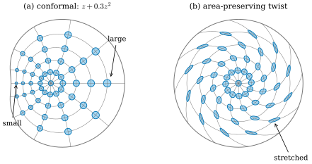
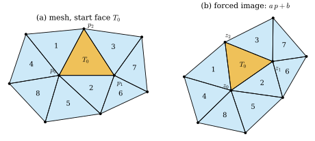

43.1 Why Conformal?
Goals
- 휜 곡면의 지도에서 무엇을 보존할지 골라야 하는 이유를 Theorema Egregium으로 설명하고, conformal map을 “작은 원을 작은 원으로 보내는 map”으로 읽을 수 있다.
- conformal map이 계산과 이론에서 유리한 이유를 area-preserving map과 비교해 말할 수 있다.
- triangle mesh에서 모든 face의 각을 정확히 보존하는 piecewise linear map은 하나의 similarity뿐임을 증명하고, 그래서 conformality의 discrete 판이 여럿 필요하다는 것을 설명할 수 있다.
Prerequisites
- Definition 7.4.1: conformal map, Theorem 7.4.5: 각의 보존
- Definition 38.2.7: conformal coordinates와 conformal factor \(e^{2\mu}\), Proposition 38.2.8: 원이 원으로
- Theorem 42.6.6의 증명과 Exercise 42.6.6: Dirichlet energy와 넓이의 차이
- Corollary 0.5.3: 왜곡 없는 sphere의 지도는 없다
- Definition 31.6.1: UV map과 singular value, Proposition 31.6.4: 평면의 angle 합
Motivation
Chapter 42는 mesh 위의 Dirichlet energy에서 한 가지를 남기고 끝났다. 곡면 mesh에서 다른 위치로 가는 piecewise linear map의 Dirichlet energy는 언제나 image의 넓이 이상이고, 그 차이 \(\sum_fA_f\tfrac12(\sigma_1 - \sigma_2)^2\)은 face마다 map이 각을 얼마나 깨는지를 잰다(Exercise 42.6.6). 차이가 \(0\)인 것은 모든 face가 similarity로 옮겨질 때, 곧 map이 각을 보존할 때뿐이다. 그렇다면 각을 보존하는 map은 왜 그렇게 특별하고, 그 차이를 최소화하면 무엇을 얻는가? 이 장은 이 질문에 답한다.
출발점은 오래된 문제다. 둥근 지구를 평평한 종이에 옮기고 싶다. Section 0.5는 Theorema Egregium 때문에 sphere의 어떤 조각도 길이를 보존하며 평면에 펼 수 없다고 했다(Corollary 0.5.3). 길이를 모두 지킬 수 없으면 무엇을 지킬지 골라야 한다. 각을 지키면 conformal map, 넓이를 지키면 area-preserving map이다. 둘을 동시에 지키면 길이를 지키는 것이 되므로(Exercise 0.5.1), 휜 곡면에서는 하나만 고를 수 있다. 강의 슬라이드는 이 장의 출발점을 지도 만들기로 잡고, 각을 정확히 지키는 지도는 언제나 만들 수 있다는 것을 강조한다 [CMU-DDG L19–20] slides 5–7.
이 절은 세 가지를 한다. conformal map을 다시 불러와 그림으로 읽고, 왜 하필 각인지 정리하고, triangle mesh에서는 “각을 정확히 보존한다”는 조건이 너무 강하다는 것을 증명한다. 마지막 사실 때문에 이 장의 나머지는 각의 보존을 정확히 요구하는 대신 그 위반을 에너지로 재고 최소화한다.
The Mapmaking Problem
먼저 정의를 상기하자. 곡면 사이의 diffeomorphism \(\varphi\colon S_1 \to S_2\)는 모든 점에서 differential이 inner product를 양수 배율의 제곱만큼 늘이면 conformal map(등각사상)이다(Definition 7.4.1). 곧 어떤 smooth 함수 \(\mu\)가 있어
이다. diffeomorphism을 요구하지 않으면 local conformal map이다. 이 조건은 곡선 사이의 각을 보존하는 것과 같고(Theorem 7.4.5), 한 점에서 보면 differential이 단위원을 원으로 보내는 것과 같다(Proposition 38.2.8(iii)). 그래서 conformal map은 “작은 원을 작은 원으로 보내는 map”이다. 원의 크기는 바뀌어도(배율 \(e^{\mu}\)) 모양은 바뀌지 않는다. 지도에서는 지도 위의 작은 영역이 실제 땅의 모양과 닮은꼴이라는 뜻이다.
Example 43.1.1 (two conformal maps of the sphere). unit sphere의 running example에서 두 conformal map을 상기하자. (a) Mercator projection \((\theta, \varphi) \mapsto (\varphi, t)\), \(t = \log\cot(\theta/2)\)의 inverse는 induced metric이 \(\operatorname{sech}^2t\,(d\varphi^2 + dt^2)\)인 conformal coordinates다(Example 38.2.10, Example 7.4.10). 곧 sphere에서 지도로 갈 때 길이가 \(\cosh t = 1/\sin\theta\)배 된다. 적도(\(\theta = \pi/2\))에서 \(1\)배이고, 북위 \(60^\circ\)(\(\theta = \pi/6\))에서 \(2\)배이므로 넓이는 \(4\)배다. (b) 북극에서의 stereographic projection \(\sigma\)(§7)의 inverse는 \(e^{\mu} = 2/(1 + \abs{w}^2)\)인 conformal coordinates다(Example 38.2.9, \(r = 1\)). 따라서 \(\sigma\)의 길이 배율은 \((1 + \abs{\sigma}^2)/2\)이다. 남극(\(\sigma = 0\))에서 \(\tfrac12\), 적도(\(\abs{\sigma} = 1\))에서 \(1\)이고, 북극에 가까워지면 끝없이 커진다. 두 지도 모두 각은 정확히 지키고 넓이를 크게 바꾼다. 어느 쪽도 sphere 전체를 하나의 평면 영역으로 덮지 못한다는 것도 같다(Mercator는 두 극과 경선 하나, stereographic은 북극을 뺀다).
Verification: verify/v-43-1-why-conformal.py
conformal map이 무엇을 지키고 무엇을 버리는지는 area-preserving map과 나란히 놓으면 잘 보인다. Figure 43.1.1을 보자. 두 패널 모두 unit disk 안의 같은 위치에 같은 크기의 작은 원(반지름 \(0.045\)) 49개를 놓고 map으로 옮긴 결과다. 왼쪽 (a)의 map \(f(z) = z + 0.3z^2\)에서는 모든 원이 원으로 간다. 대신 크기가 왼쪽 끝에서는 \(0.4\)배, 오른쪽 끝에서는 \(1.6\)배로 다르다. 오른쪽 (b)의 twist는 원을 길쭉한 ellipse로 만든다. 대신 모든 ellipse의 넓이가 원래 원의 넓이와 같다. (a)의 \(f\)가 conformal이라는 것은 Section 43.2에서 Cauchy–Riemann equations로 확인한다. 여기서는 그림으로 받아들이자.

Why Angles?
넓이를 지키는 것도 각을 지키는 것만큼 자연스러워 보인다. 그런데 기하 처리와 해석에서는 conformal map이 압도적으로 많이 쓰인다. 강의 슬라이드는 그 이유를 품질, 단순함, 효율, 보장의 넷으로 정리한다 [CMU-DDG L19–20] slides 11–16. 각각이 이 장의 어디에서 정확한 진술이 되는지 함께 적는다.
Remark 43.1.2 (what conformality buys). (a) 품질. 각을 보존한다는 조건 하나가 강한 정칙성을 준다. 평면에서 orientation을 지키는 conformal map은 holomorphic function이고(Section 43.2), complex differentiable이기만 하면 저절로 \(C^\infty\)다(진술만 한다, Section 43.2). 배율의 로그 \(\mu = \log\abs{f'}\)은 harmonic function이어서(Exercise 43.2.4에서 증명한다) 왜곡이 고르게 퍼지고, 상수가 아니면 안쪽에서 최댓값과 최솟값을 갖지 않는다(Corollary 42.2.9).
(b) 단순함. conformal coordinates에서는 metric이 함수 하나 \(\mu\)로 정해지고, Laplace–Beltrami operator가 \(e^{-2\mu}(\partial_u^2 + \partial_v^2)\)가 된다(Proposition 42.1.10(b)). Gaussian curvature가 \(0\)이 아닌 곳에는 평면 영역에서 오는 isometric parametrization이 없지만(sphere는 Corollary 0.5.3) conformal coordinates는 언제나 국소적으로 있으므로(Theorem 38.2.12), 이 공식은 어느 곡면에서나 쓸 수 있다.
(c) 효율. conformal map을 찾는 문제는 선형계나 eigenproblem 하나로 풀린다(Section 43.5). 더 복잡한 조건(왜곡의 상한, 국소적 injectivity)을 붙인 map은 대개 비선형 최적화가 필요하다.
(d) 보장. 이론이 잘 알려져 있다. Riemann mapping theorem(리만 사상 정리)에 따르면 disk 모양의 곡면은 언제나 disk로 conformal하게 펼 수 있고, uniformization theorem(균일화 정리)에 따르면 닫힌 곡면은 세 가지 표준 기하 중 하나로 바꿀 수 있다. 둘 다 Section 43.3에서 진술한다.
area-preserving map은 (a)와 (d)의 반대편에 있다. 다음 예가 그것을 보여 준다.
Non-example 43.1.3 (an area-preserving twist). smooth 함수 \(\tau\colon [0, 1] \to \R\)에 대해 unit disk의 map \(T(\rho e^{\mathrm{i}\vartheta}) = \rho e^{\mathrm{i}(\vartheta + \tau(\rho))}\)를 보자(\(\tau\)가 \(0\) 근처에서 상수이면 원점에서도 smooth하다). polar coordinates의 orthonormal frame \((e_\rho, e_\vartheta)\)에서 \(T\)는 \(\rho\)를 그대로 두고 각을 \(\tau(\rho)\)만큼 돌리므로, \(e_\rho\) 방향으로 \(h\)만큼 움직이면 image는 반지름 방향으로 \(h\), 원 방향으로 \(\rho\tau'(\rho)h\)만큼 움직인다. 곧 image 점의 frame에서 differential의 행렬은
인 shear다. \(\det DT = 1\)이므로 \(T\)는 넓이를 보존한다. 그러나 singular value는 \(\sigma_{1,2} = \tfrac12\big(\sqrt{s^2 + 4} \pm s\big)\)이고, \(s \ne 0\)이면 \(\sigma_1 \ne \sigma_2\)이므로 각을 보존하지 않는다. Figure 43.1.1(b)는 \(\tau(\rho) = 1.2\rho^2\)이고, \(\rho = 0.8\)에서 \(s = 1.536\), \(\sigma_1/\sigma_2 = \sigma_1^2 = 4.12\)이다(작은 원으로 잰 값 \(4.09\)). \(\tau\)를 아무 smooth 함수로 바꾸어도 넓이는 보존되므로, area-preserving map은 함수 하나만큼의 자유도를 가진 이런 twist만으로도 무한히 많다. 더 일반적으로 divergence가 \(0\)인 모든 vector field의 flow가 area-preserving이다. 반면 unit disk에서 자기 자신으로 가는 orientation을 지키는 conformal diffeomorphism은 실수 parameter 세 개로 정해지는 Möbius transformation뿐이다(Section 43.2에서 보는 변환이고, 이 사실 자체는 진술만 한다). 강의 슬라이드도 같은 대비를 든다 [CMU-DDG L19–20] slide 14.
Verification: verify/v-43-1-why-conformal.py
conformal map의 자유도가 이렇게 작다는 것은 약점이 아니라 장점이다. 조건이 강할수록 답이 하나로 모이고, 계산도 그 구조를 쓸 수 있다. 다만 그 강함이 discrete 세계에서는 문제가 된다. 다음 절에서 보듯이 mesh에서는 너무 강해서 답이 거의 없어진다.
Exact Angle Preservation on a Mesh Is Too Rigid
mesh 위의 map은 vertex마다 평면의 점 \(z_i \in \mathbb{C}\)를 정하고 face 안은 linear하게 채운 piecewise linear map이다(Section 31.6의 UV map). 가장 직접적인 discrete 판은 “모든 face에서 각을 정확히 보존한다”이다. face 하나의 affine map이 각을 보존하는 것은 그 map이 similarity, 곧 orthogonal map(rotation 또는 반사)과 양수 배율과 translation의 합성인 것과 같다(Proposition 7.4.4). face의 orientation을 지키는 similarity로 제한하면 이것은 image triangle이 원래 triangle과 같은 방향의 닮은꼴이라는 뜻이다. 식으로 쓰자. face \(f = (i, j, k)\)를 그 평면의 positively oriented orthonormal frame에서 복소수 \(p_i, p_j, p_k\)로 쓰면(Section 31.6과 같은 face frame), orientation을 지키는 similarity는 \(p \mapsto ap + b\)(\(a \in \mathbb{C}\setminus\{0\}\))이고, 세 image가 그 꼴이라는 조건은
이다. \(a = (z_j - z_i)/(p_j - p_i)\), \(b = z_i - ap_i\)로 두면 \(z_i, z_j\)가 맞고, (43.1.3)이 \(z_k\)도 맞춘다. 거꾸로 \(z = ap + b\)이면 (43.1.3)이 바로 나온다. 핵심은 (43.1.3)의 오른쪽이 \(z_i, z_j\)만으로 정해진다는 것이다. edge 하나의 image가 정해지면 그 edge를 가진 face의 셋째 vertex가 강제된다.
Proposition 43.1.4 (rigidity of angle-preserving piecewise linear maps). oriented triangle mesh의 어느 두 face도 edge를 공유하는 face들의 사슬로 이어진다고 하자(connected manifold mesh는 이 조건을 만족한다). piecewise linear map \(z\)가 모든 face에서 orientation을 지키는 similarity이면
(a) 모든 face의 배율 \(\abs{a_f}\)이 같다.
(b) \(z\)는 한 edge의 image \(z_i, z_j\)로 완전히 정해진다. 특히 한 face의 image가 전체를 정한다.
(c) mesh가 평면 안에 있고(vertex \(p_i \in \mathbb{C}\), face가 모두 counterclockwise), 모든 face에서 같은 frame을 쓰면 \(z\)는 하나의 similarity \(z_i = ap_i + b\)의 제한이다.
Proof idea: 이웃한 두 face는 edge 하나, 곧 점 두 개를 공유한다. orientation을 지키는 similarity는 두 점의 image로 정해진다.
Proof. face \(f\)에서 \(z = a_fp + b_f\)라 하자(\(p\)는 \(f\)의 face frame 좌표, \(a_f \ne 0\)). (a) 이웃한 face \(f, g\)가 edge \(ij\)를 공유하면 \(\abs{z_j - z_i} = \abs{a_f}\ell_{ij} = \abs{a_g}\ell_{ij}\)이다(similarity는 길이를 \(\abs{a}\)배 한다, \(\ell_{ij}\)는 mesh의 edge 길이). \(\ell_{ij} \gt 0\)이므로 \(\abs{a_f} = \abs{a_g}\)이고, 가정의 사슬을 따라가면 모든 face에서 같다. (b) \(z\)와 \(z'\)이 둘 다 가정을 만족하고 edge \(ij\)에서 \(z_i = z'_i\), \(z_j = z'_j\)라 하자. edge \(ij\)를 가진 face \(f = (i, j, k)\)에서 (43.1.3)의 오른쪽이 같으므로 \(z_k = z'_k\)이고, \(f\)의 세 vertex에서 둘이 같다. \(f\)와 edge를 공유하는 face \(g\)는 그 edge의 두 vertex 값이 같으므로 같은 논법으로 셋째 vertex도 같다. 가정의 사슬을 따라 모든 face, 따라서 모든 vertex에서 \(z = z'\)이다. (c) 평면 mesh에서 모든 face가 같은 좌표 \(p\)를 쓰므로, 이웃한 face \(f, g\)의 similarity \(a_fp + b_f\)와 \(a_gp + b_g\)는 공유 edge의 두 점 \(p_i \ne p_j\)에서 같다. 두 식을 빼면 \((a_f - a_g)p_i + (b_f - b_g) = 0\)이고 \((a_f - a_g)p_j + (b_f - b_g) = 0\)이므로 \(a_f = a_g\), \(b_f = b_g\)이다. 사슬을 따라 모든 face의 \((a_f, b_f)\)가 같다.
Figure 43.1.2가 이 증명을 그대로 보여 준다. 왼쪽 (a)는 vertex 9개, face 9개인 평면 mesh이고, 주황 face \(T_0 = (p_0, p_1, p_2)\)에서 출발한다. 숫자는 edge를 공유하는 face를 너비 우선으로 따라갈 때 각 face에 도착하는 순서다. 오른쪽 (b)에서는 \(T_0\)의 image만 정해 주었다(\(0.75\)배, \(35^\circ\) 회전, 이동). 그다음 face 1은 \(T_0\)와 공유하는 edge의 두 image가 이미 있으므로 (43.1.3)으로 셋째 vertex가 강제되고, 2, 3, …도 차례로 강제된다. 마지막 face 8에 이르기까지 선택의 여지가 한 번도 없다. 결과는 (a) 전체를 한꺼번에 돌리고 줄인 것과 정확히 같다.

평면 mesh에서는 그래도 similarity라는 답이 하나 있다. 곡면 mesh에서는 대개 답이 아예 없다. 한 vertex 둘레를 돌며 face를 하나씩 강제로 펴 보면 이유가 보인다.
Corollary 43.1.5 (angle defects obstruct exact angle preservation). Proposition 43.1.4의 map \(z\)가 있으면, mesh의 모든 interior vertex \(i\)에서 angle defect \(\delta_i = 2\pi - \sum_f\theta_i^f\)(Definition 40.1.1)는 \(2\pi\)의 정수배다. 따라서 \(\delta_i \notin 2\pi\Z\)인 interior vertex가 하나라도 있는 mesh에는 모든 face에서 각을 보존하는 piecewise linear map이 없다.
Proof. interior vertex \(i\)의 이웃을 둘레 순서로 \(j_1, \dots, j_m\)이라 하고(index는 \(m\)을 법으로 센다), face \((i, j_k, j_{k+1})\)의 \(i\)에서의 corner angle을 \(\theta_k\)라 하자. 이 face에서 \(z\)는 orientation을 지키는 similarity이므로, (43.1.3)을 \(j_k\)와 \(j_{k+1}\)에 쓰면 \(w_k := z_{j_k} - z_i\)에 대하여 \(w_{k+1}/w_k = (\ell_{ij_{k+1}}/\ell_{ij_k})\,e^{\mathrm{i}\theta_k}\)이다(face frame에서 \(p_{j_{k+1}} - p_i\)는 \(p_{j_k} - p_i\)를 \(\theta_k\)만큼 돌리고 길이의 비를 곱한 것이다). \(k = 1, \dots, m\)에 대해 곱하면 왼쪽은 \(w_{m+1}/w_1 = 1\)이고 오른쪽은 \(e^{\mathrm{i}\sum_k\theta_k}\)이다(길이의 비는 곱하면 \(1\)이다). 따라서 \(\sum_k\theta_k = 2\pi - \delta_i \in 2\pi\Z\)이다.
이 증명은 vertex 둘레에서 face를 하나씩 평면에 펼치는 과정을 식으로 쓴 것이다. 그림은 Section 31.2에 이미 있다. Figure 31.2.2의 아랫줄이 같은 연결의 세 star를 차례로 펼친 것이고, \(\delta \gt 0\)인 cone에서는 마지막 edge와 처음 edge 사이에 틈이, \(\delta = 0\)인 평면에서는 정확한 맞물림이, \(\delta \lt 0\)인 saddle에서는 겹침이 생긴다. 그 그림의 펼침은 길이를 보존하지만, 증명의 식에서 보듯이 face마다 similarity를 허용해도 배율은 edge를 따라 전해지므로(Proposition 43.1.4(a)) 그림이 달라지지 않는다. 틈이나 겹침의 각이 정확히 \(\abs{\delta_i}\)이고, 그것이 \(2\pi\)의 배수가 아니면 처음 edge의 image로 돌아올 수 없다.
그렇다면 정확히 conformal한 map을 sample한 piecewise linear map은 얼마나 conformal한가? 다음 예는 답이 “거의 그렇다”임을 보인다. discrete 조건이 rigid한 것이지, conformal map이 mesh로 잘 근사되지 않는 것은 아니다.
Example 43.1.6 (sampling a conformal map on a grid).
local conformal map \((x, y) \mapsto e^x(\cos y, \sin y)\)(Example 7.4.2(c), 복소수로 \(z = e^{x + \mathrm{i}y}\))을 unit square의 grid mesh(dgmesh.grid_mesh, 한 변에 \(n\)칸)의 vertex에서 sample해 piecewise linear map을 만들자. Proposition 43.1.4(c)에 따라 이 map이 모든 face에서 정확한 similarity일 수는 없다(그랬다면 전체가 하나의 similarity여서 \(e^{x+\mathrm{i}y}\)의 sample일 수 없다). 실제로는 어느 face에서도 similarity가 아니다(\(n = 4\)에서 face마다의 \(\sigma_1/\sigma_2 - 1\)의 최솟값이 \(0.190\)이다). 그러나 face마다의 \(\sigma_1/\sigma_2 - 1\)의 최댓값은 \(n = 4, 8, 16, 32\)에서 \(0.198\), \(0.093\), \(0.045\), \(0.022\)로 \(n\)에 반비례해 준다. 각의 오차는 mesh 크기에 비례하는 1차 오차다. Section 43.5는 이 “거의”를 에너지로 재고 최소화한다.
Verification: verify/v-43-1-why-conformal.py
Summary
- 휜 곡면은 길이를 보존하며 펼 수 없으므로 각과 넓이 가운데 하나를 고른다. conformal map은 작은 원을 크기만 다른 원으로 보내는 map이다((43.1.1), Example 43.1.1).
- area-preserving map은 shear를 허용하므로 자유도가 거대하고(Non-example 43.1.3), conformal map은 강한 정칙성, 간단한 좌표 공식, 선형 계산, 존재 정리를 준다(Remark 43.1.2).
- mesh에서 모든 face의 각을 정확히 보존하는 piecewise linear map은 한 edge의 image로 정해지고, 평면 mesh에서는 하나의 similarity뿐이다(Proposition 43.1.4). 곡면 mesh에서는 \(\delta_i \notin 2\pi\Z\)인 vertex 하나가 그런 map을 막는다(Corollary 43.1.5).
- smooth conformal map을 sample하면 face마다의 각의 오차는 mesh 크기에 비례해 준다(Example 43.1.6). 그래서 정확한 보존 대신 위반을 재고 최소화한다.
다음 절에서는 평면에서 평면으로 가는 가장 단순한 경우로 돌아가, 복소수의 곱셈이 rotation과 scaling이라는 것에서 출발해 conformal map을 Cauchy–Riemann equations와 holomorphic function으로 특징짓는다.
Exercises
Exercise 43.1.1 ★ unit sphere의 Mercator 지도에서 colatitude \(\theta\)인 점 둘레의 넓이 배율(지도의 넓이 / sphere의 넓이)을 구하여라. 북위 \(45^\circ\)와 \(75^\circ\)에서 각각 얼마인가? 같은 점에서 Lambert의 cylindrical equal-area projection(Section 0.5)은 북쪽 방향과 동쪽 방향의 길이를 각각 몇 배로 바꾸는가?
Solution
Example 43.1.1(a)에서 길이 배율이 \(1/\sin\theta\)이므로 넓이 배율은 \(1/\sin^2\theta\)이다. 북위 \(45^\circ\)는 \(\theta = 45^\circ\)이므로 \(2\), 북위 \(75^\circ\)는 \(\theta = 15^\circ\)이므로 \(1/\sin^215^\circ = 14.93\)이다. Lambert projection \((\theta, \varphi) \mapsto (\varphi, \cos\theta)\)에서 동쪽(\(\varphi\) 방향) 단위 길이는 sphere에서 \(\sin\theta\,d\varphi\)이고 지도에서 \(d\varphi\)이므로 \(1/\sin\theta\)배, 북쪽(\(-\theta\) 방향) 단위 길이는 sphere에서 \(d\theta\)이고 지도에서 \(\abs{d\cos\theta} = \sin\theta\,d\theta\)이므로 \(\sin\theta\)배다. 곱이 \(1\)이라 넓이는 보존되지만 두 방향의 비가 \(1/\sin^2\theta\)라 원이 ellipse가 된다(북위 \(75^\circ\)에서 비가 \(14.93\)).
Verification: verify/v-43-1-why-conformal.py
Exercise 43.1.2 ★ 참인지 거짓인지 판별하고 이유를 써라. “Proposition 43.1.4(c)에서 orientation을 지킨다는 가정을 빼고 ‘모든 face에서 similarity(반사도 허용)’로 바꾸어도 결론은 그대로다.”
Solution
거짓이다. 평면 mesh를 직선 \(\operatorname{Im}p = 0\)을 따라 두 쪽으로 나누어, 위쪽 face에는 항등 map을, 아래쪽 face에는 그 직선에 대한 반사 \(p \mapsto \bar p\)를 쓰자(예: 실수축 위에 vertex의 줄이 있는 grid mesh). 직선 위의 vertex에서 두 map이 같으므로 piecewise linear map이 잘 정의되고, 각 face에서 similarity(아래쪽은 orientation을 뒤집는다)이다. 그러나 전체는 하나의 similarity가 아니라 종이를 접은 것(fold)이다. 증명이 어디서 깨지는지 보면, (43.1.3)은 orientation을 지키는 similarity의 식이다. 반사를 허용하면 공유 edge의 image가 정해져도 셋째 vertex의 후보가 두 개(edge에 대해 대칭)이므로 강제되지 않는다.
Exercise 43.1.3 ★ 북극에서의 stereographic projection \(\sigma\)가 unit sphere의 넓이를 몇 배로 바꾸는지 \(\sigma\)의 크기의 함수로 써라. 이 배율을 써서 남반구의 넓이 \(2\pi\)를 그 image(unit disk) 위의 적분으로 다시 계산하고, image의 넓이 \(\pi\)와 비교해 평균 배율을 구하여라.
Solution
Example 43.1.1(b)에서 길이 배율이 \((1 + \abs{\sigma}^2)/2\)이므로 넓이 배율은 \((1 + \abs{\sigma}^2)^2/4\)이다. 거꾸로 평면의 넓이 요소 \(dA_{\mathbb{C}}\)에 대응하는 sphere의 넓이는 \(e^{2\mu}dA_{\mathbb{C}} = 4\,dA_{\mathbb{C}}/(1 + \abs{w}^2)^2\)이다. 남반구는 \(\abs{w} \lt 1\)에 대응하므로 sphere의 넓이는 \(\int_0^{2\pi}\int_0^1\tfrac{4\rho}{(1 + \rho^2)^2}\,d\rho\,d\vartheta = 2\pi\big[-\tfrac{2}{1 + \rho^2}\big]_0^1 = 2\pi\)이고, 이것은 남반구의 넓이와 같다. image의 넓이는 \(\pi\)이므로 평균 배율은 \(\tfrac12\)이고, 남극에서 \(\tfrac14\), 적도에서 \(1\) 사이의 값이다.
Verification: verify/v-43-1-why-conformal.py
Exercise 43.1.4 ★★ Non-example 43.1.3의 twist \(T\)가 conformal인 것은 \(\tau\)가 상수일 때뿐임을 보여라. 또 \(\tau(\rho) = c\rho^2\)일 때 \(\rho\)에서의 \(\sigma_1/\sigma_2\)를 \(c\rho^2\)의 함수로 쓰고, \(\rho \to 0\)과 \(\rho \to \infty\)의 행동을 말하여라.
Solution
(43.1.2)에서 \(DT\)는 \(s = \rho\tau'(\rho)\)인 shear이고 \(DT^{\mathsf T}DT = \begin{pmatrix} 1 + s^2 & s \\ s & 1 \end{pmatrix}\)이다. 각을 보존하려면 이것이 단위행렬의 양수배여야 하므로(Proposition 7.4.4) 비대각 성분 \(s = 0\)이어야 한다. 모든 \(\rho \gt 0\)에서 \(\rho\tau'(\rho) = 0\)이면 \(\tau' = 0\)이므로 \(\tau\)가 상수이고, 이때 \(T\)는 rotation이다. 거꾸로 상수 \(\tau\)이면 \(s = 0\)이다. \(\tau = c\rho^2\)이면 \(s = 2c\rho^2\)이고 \(\sigma_1\sigma_2 = 1\), \(\sigma_1 = \tfrac12(s + \sqrt{s^2 + 4})\)이므로 \(\sigma_1/\sigma_2 = \sigma_1^2\)이고, 이것은 \(\tfrac14\big(2c\rho^2 + \sqrt{4c^2\rho^4 + 4}\big)^2\), 곧 \(\big(c\rho^2 + \sqrt{c^2\rho^4 + 1}\big)^2\)이다. \(\rho \to 0\)이면 \(1 + 2c\rho^2 + O(\rho^4)\)로 \(1\)에 가깝고, \(\rho\)가 크면 \(4c^2\rho^4\)처럼 커진다. \(c = 1.2\)(\(\tau = 1.2\rho^2\)), \(\rho = 0.8\)이면 \((0.768 + \sqrt{1.5898})^2 = 4.12\)로 Figure 43.1.1의 값과 같다.
Verification: verify/v-43-1-why-conformal.py
Exercise 43.1.5 ★★ Coding. Example 43.1.6의 실험을 \(z = e^{x + \mathrm{i}y}\)와 \(z = (x + 1 + \mathrm{i}y)^2\)에 대해 \(n = 4, 8, 16, 32\)로 되풀이하여라. face마다 \(\sigma_1/\sigma_2 - 1\)의 최댓값과, face마다 \(A_f\tfrac12(\sigma_1 - \sigma_2)^2\)을 더한 값(Exercise 42.6.6의 차이를 평면에서 잰 것)을 출력하여라. 두 양은 각각 \(n\)의 몇 제곱으로 줄어드는가?
Solution
import numpy as np
import dgmesh as dm
def face_ratios_and_gap(V, F, z):
"""per face: sigma1/sigma2 of the affine map face -> image, and A_f * (sigma1 - sigma2)^2 / 2."""
ratio, gap = [], 0.0
for tri in F:
P = (V[tri[1:], :2] - V[tri[0], :2]).T # 2 x 2: face edges (planar mesh)
d = z[tri[1:]] - z[tri[0]]
J = np.stack([d.real, d.imag]) @ np.linalg.inv(P) # differential of the face map
s1, s2 = np.linalg.svd(J, compute_uv=False)
ratio.append(s1 / s2)
gap += 0.5 * abs(np.linalg.det(P)) * 0.5 * (s1 - s2) ** 2
return max(ratio), gap
for name, f in (("exp", np.exp), ("square", lambda w: (w + 1) ** 2)):
for n in (4, 8, 16, 32):
xs = np.linspace(0, 1, n + 1)
V, F = dm.grid_mesh(xs, xs)
r, g = face_ratios_and_gap(V, F, f(V[:, 0] + 1j * V[:, 1]))
print(f"{name:6s} n={n:2d} max ratio - 1 = {r - 1:.4f} gap = {g:.3e}")exp n= 4 max ratio - 1 = 0.1984 gap = 4.957e-02
exp n= 8 max ratio - 1 = 0.0935 gap = 1.246e-02
exp n=16 max ratio - 1 = 0.0454 gap = 3.118e-03
exp n=32 max ratio - 1 = 0.0224 gap = 7.798e-04
square n= 4 max ratio - 1 = 0.1785 gap = 6.250e-02
square n= 8 max ratio - 1 = 0.0892 gap = 1.562e-02
square n=16 max ratio - 1 = 0.0444 gap = 3.906e-03
square n=32 max ratio - 1 = 0.0222 gap = 9.766e-04\(n\)을 두 배로 하면 \(\sigma_1/\sigma_2 - 1\)은 약 \(\tfrac12\)배, 차이(gap)는 약 \(\tfrac14\)배가 된다. 곧 각의 오차는 mesh 크기 \(h = 1/n\)에 비례하고, 그 제곱을 넓이로 적분한 양은 \(h^2\)에 비례한다. 각 face에서 \(\sigma_1 - \sigma_2\)가 \(O(h)\)이고 넓이의 합이 \(O(1)\)이기 때문이다. \((w + 1)^2\)의 gap은 \(1/n^2\)과 정확히 같은 값을 보인다(\(n = 4\)에서 \(0.0625\)). 이 양이 Section 43.5의 discrete conformal energy이고, Section 43.4는 그 smooth 판을 정의한다.
Verification: verify/v-43-1-why-conformal.py가 이 코드를 그대로 실행하고 출력을 비교한다.